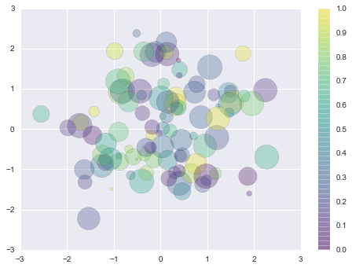

I'm a physicist, data scientist, and cyclist. Until recently, I was a professor at Shanghai Jiao Tong University. Right now, I'm working on my computational linguistics startup Sinophenia. We're developing algorithms and tools to optimize various aspects of learning Chinese, and a unique cognitive science-based series of Chinese graded readers called Tangerine Chinese.
import numpy as np import scipy as sp from scipy.optimize import curve_fit from scipy import stats import pandas as pd from pandas import Series, DataFrame, Index, MultiIndex #pd.set_option('display.notebook_repr_html', False) #pd.set_option('display.max_columns', 10) pd.set_option('display.max_rows', 10) import matplotlib.pyplot as plt %matplotlib inline # %matplotlib notebook # interactive print(plt.style.available) plt.style.use('seaborn-notebook') #%config InlineBackend.figure_format = 'retina' import seaborn as sns sns.set() %load_ext autoreload %autoreload 2
['seaborn-deep', 'seaborn-notebook', 'seaborn-poster', 'seaborn-ticks', 'grayscale', 'seaborn-paper', 'seaborn-darkgrid', 'classic', 'seaborn-colorblind', 'seaborn-dark', 'seaborn-muted', 'ggplot', 'seaborn-pastel', 'seaborn-bright', 'seaborn-dark-palette', 'seaborn-talk', 'seaborn-whitegrid', 'dark_background', 'fivethirtyeight', 'seaborn-white', 'bmh'] The autoreload extension is already loaded. To reload it, use: %reload_ext autoreload
rng = np.random.RandomState(0) x = rng.randn(100) y = rng.randn(100) colors = rng.rand(100) sizes = 1000 * rng.rand(100) fig, ax = plt.figure(), plt.axes() im = ax.scatter(x, y, c=colors, s=sizes, cmap='viridis', alpha=0.3) fig.colorbar(im, ax=ax) im.set_clim(0.0, 1.0) # not always required
